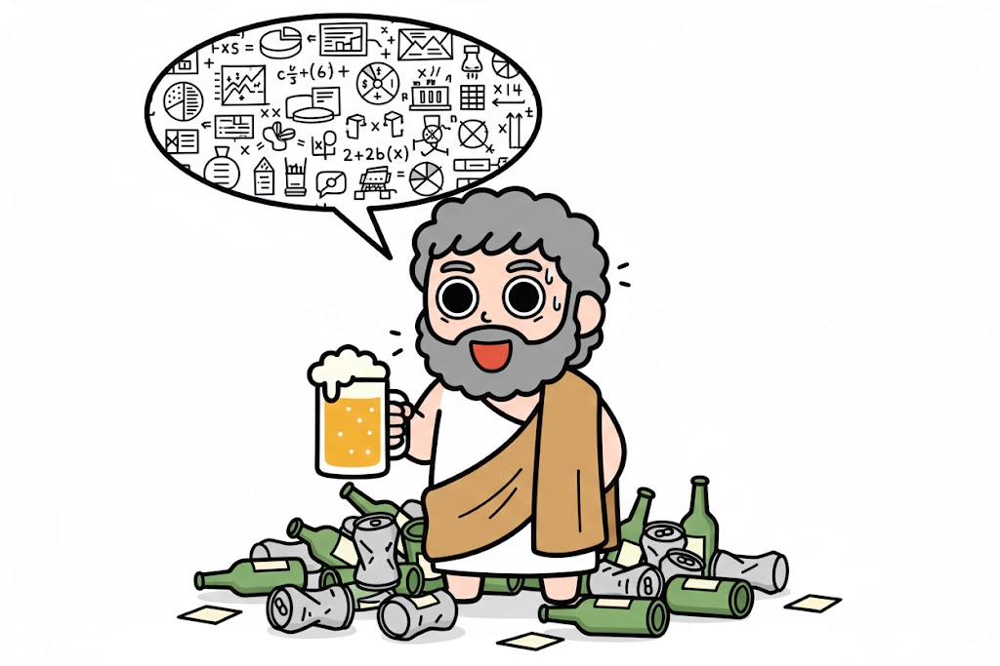

あなたの酒タイプは…

「情熱と理性を失わない」強い酒を飲みながら、仕事や人生について静かに深く語り続ける。うんちくが止まらない。
基本的特徴：深夜のロジカル・フィロソファー
強い酒を飲みながら、仕事、人生、社会の本質について語り続ける情熱的な知識人です。酔っても論理が崩れず、むしろ語彙が研ぎ澄まされていくため、周囲は「いつ寝るのか」と驚愕に包まれます。知的好奇心が旺盛で、飲み会を単なる騒ぎの場ではなく「深い議論の場」として愛しています。
飲み会での特徴：熱血アドバイスの開演
後輩や友人を捕まえては「君のあの時の考え方、本質的にはこういうことだよ」と熱いアドバイスを開始します。本人は有益なフィードバックのつもりですが、夜が深まるにつれ、話のレイヤーが高まりすぎて周囲がついていけなくなることも。お酒の銘柄やその背景にまでこだわりを見せる凝り性です。
長所と魅力：圧倒的なパッションと知性
物事に対する向き合い方は誰よりも真摯です。その深い洞察力に救われ、迷いの中にいたメンバーがモチベーションを再燃させることも少なくありません。組織に「熱」と「指針」を注入する、貴重なエヴァンジェリスト的な存在です。
【要約力】
「良い話」をいかに短く伝えるか。あなたの素晴らしいアドバイスも、シンプルに伝えられれば相手の心にさらに深く、速く刺さるはずです。